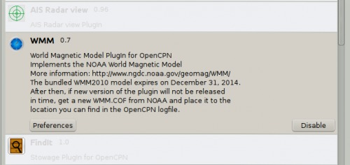
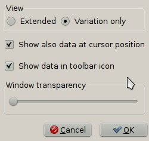
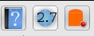
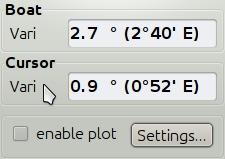
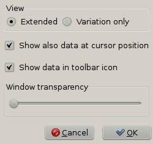
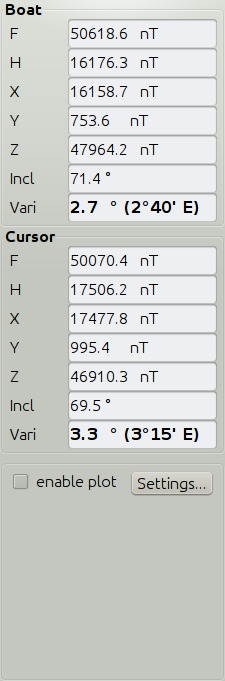
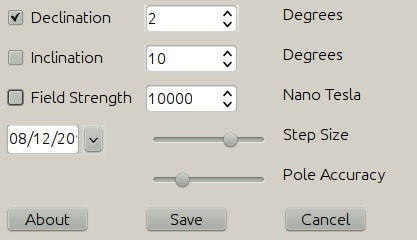
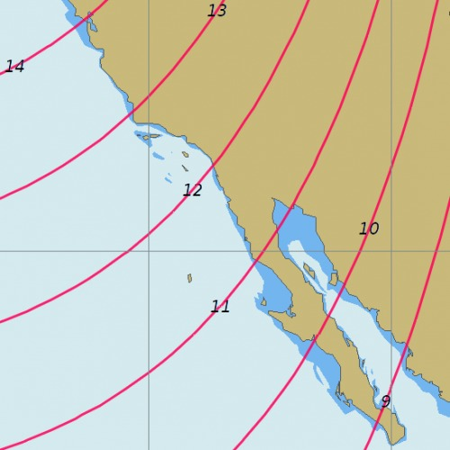
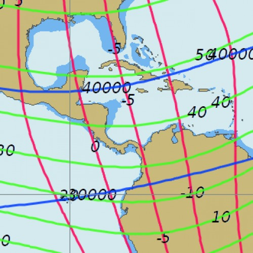

The “World Magnetic Model PlugIn for OpenCPN” implements the NOAA World Magnetic Model.
More information:
http://www.ngdc.noaa.gov/geomag/WMM/DoDWMM.shtml
The bundled WMM2010 model expires on December 31, 2014.
After then, if a new version of the plugin is not released in time, you will have to get a new WMM.COF from NOAA and place it in the location you can find in the OpenCPN logfile.
This plugin is all about the value of the magnetic variation. The value at your boat position, at the position of the cursor, and the rest of the world.
Download and install the plugin. Go to Options–>Plugins. Press the “Enable” button.

Then press the Preference button, and copy the settings below.

Press OK twice. The WMM icon will now be found in your ToolBar. The numbers in the button is the variation at your position.

Press the Toolbar Button and the small dialog below will appear on the screen. The first value is the same as in the button, the variation at your boat (gps) position. The second value is the variation at the position of the cursor.

That is all you need to know to get started, and for most of your daily use. Need more details? Read on!
World Magnetic Model Plotting allows users to cross reference the magnetic deviation values printed on many raster charts.
Variation is the angle between true and magnetic north.
Inclination is the vertical angle of the magnetic field.
A compass is adjusted for the inclination in the intended sales region.
If you buy a compass in Europe; it will not be level in Australia, for example.
Field Strength is the magnetic field in nano tesla from 20000 to 66000.
Currently the total field strength is shown, with no immediate practical use. Hopefully this will change to show the horizontal component in the future, that has an impact on whether the compass works or not, near the magnetical poles.
The plotted lines are similar to a topographic map. The space between them can be adjusted; more space takes less time to calculate.
The Step size and Pole accuracy sliders allow a trade off for speed vs computation time.

With the extended Radio-button, this dialog will show on the screen

F - Total Intensity of the geomagnetic field
H - Horizontal Intensity of the geomagnetic field
X - North Component of the geomagnetic field
Y - East Component of the geomagnetic field
Z - Vertical Component of the geomagnetic field
I (DIP) - Geomagnetic Inclination
D (DEC) - Geomagnetic Declination (Magnetic Variation)
Click “Settings” and adjust the display of the graphical plot.

Show variation only.

Or all options together.
